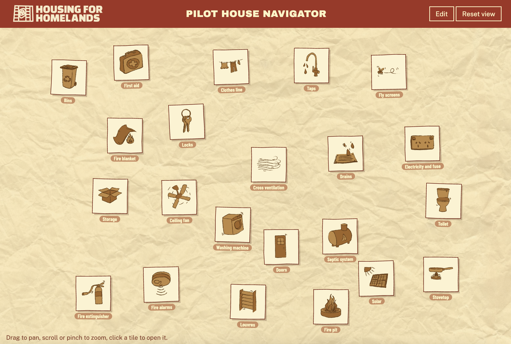

Pilot House Navigator.
Semester 2, 2026.
Housing for Homelands is a charity dedicated to strengthening Yolŋu homeland communities in Northeast Arnhem Land through improved housing and community-led development. They partner closely with Traditional Owners and local Aboriginal organisations to support safe, climate appropriate and culturally aligned housing solutions that are driven by community priorities and aspirations.
For our Engagement and Collaboration capstone project, we were provided with a brief identifying three broad research themes for us to explore that highlighted some of the priorities for their pilot house project.
One assumption we carried for a large portion of this project was the notion that technological access and literacy was somewhat limited in these communities. This in fact was not the case, mobile phones are widespread and our primary stakeholders were keen to encourage a development of a digital output versus more traditional media such as print or document.
Inspired by the non-linear framework seen in the 8 Aboriginal ways of learning and the artistic qualities of the 9 Healthy Living Practices, our final concept took form as a digital navigator intended to facilitate meaningful conversations particularly during the critical handover stage of the pilot house.
Developed in collaboration with Will McCourbie and Taffany Mills-Hicks.
Download and experience: https://drive.google.com/file/d/1mzdxX3GiFd4B2aplDq0Nmv58-LzlM2rm/view?usp=drive_link

Web based pilot house navigator.